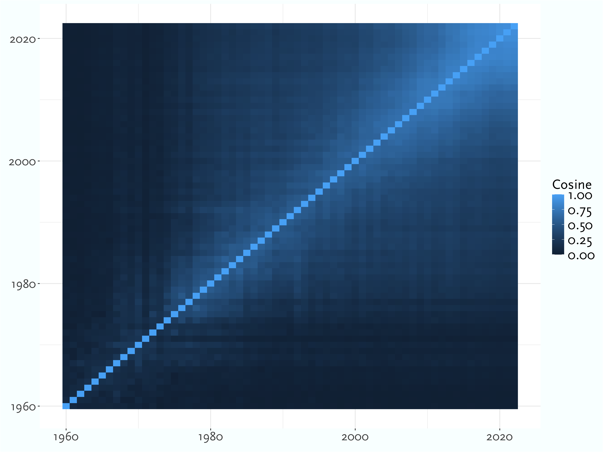
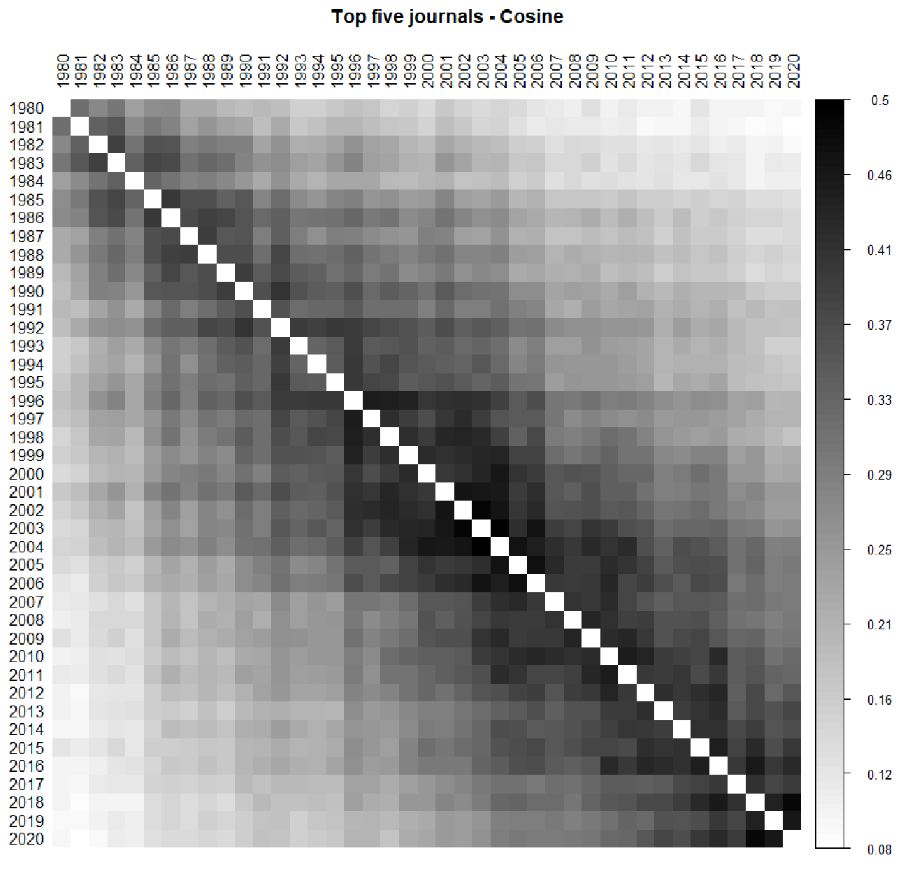
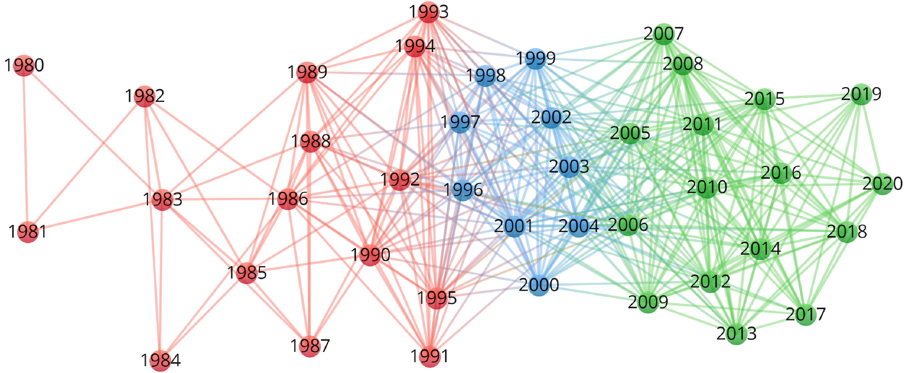
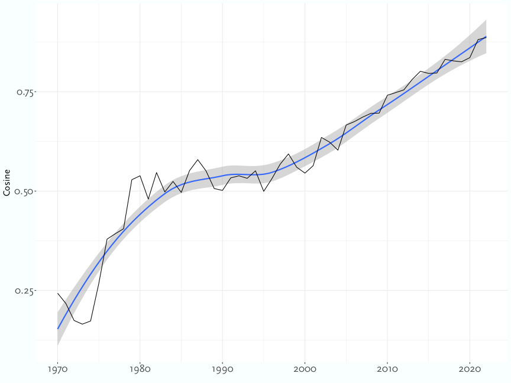
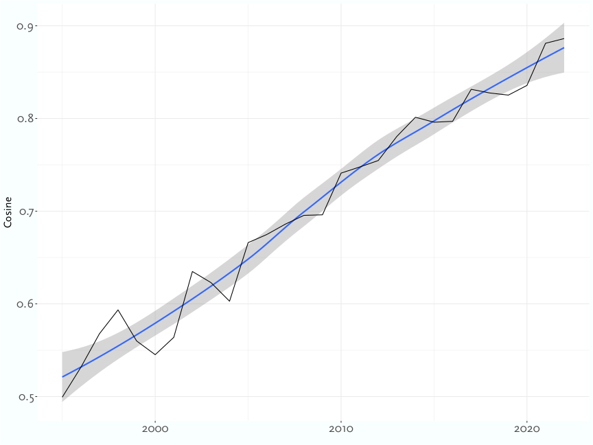

A Break in the Citation Patterns
history of analytic
in progress
online only
Abstract
Comments on Eugenio Petrovich’s book A Quantitative Portrait of Analytic Philosophy: Looking Through the Margins, for the Quantitative Studies of Philosophy workshop at Tiburg, August 21-22 2024.
First, I’d like to thank the organisers for putting on these great workshops, and Eugenio for writing such a well researched and endlessly thought provoking book.
I’m going to comment just on one study in the book - the intriguing suggestion that there’s a break in the citation patterns around 2000. This is intriguing because it connects to a question that’s long interested me: can Late Analytic Philosophy be usefully divided into eras? Are there periods within Late Analytic that are usefully separated out from the rest the way it is useful to separate out the Ordinary Language era, at least in the UK, from the times around it? No such periodization has caught on, and maybe that’s because there isn’t a useful one to find, but if the citations change around 2000, maybe we should think about whether that’s the start of a new era.
The details will matter a bit here, so let me go over what’s happening at this stage of the book (i.e., section 4.4 of the book). We start with all the citations in five big journals: Mind, Philosophical Review, Journal of Philosophy, Noûs and Philosophy and Phenomenological Research, for each year from 1980-2020. We represent the citations in each year as a vector, with a dimension for each article cited at any time in the study, and the magnitude of that dimension being the number of citations. That gives us 41 n-dimensional vectors, and we can look at their similarity by taking the cosine of the angle between them. The result is Figure 1.

The darker cells are more similar years, so in the middle of the graph, we see several years where the similarity scores are relatively high: around 0.5. Each row of that graph is itself a vector. Eugenio looked for clusters within those vectors, and Figure 2 shows what he found.

In this graph there are three clusters, but the blue cluster to me feels fairly connected to the green one. What strikes me about this graph is how few dark cells there are where one year is before 1996 and the other year is after 1996. Somewhere between 1996 and 2006, there seems to be a step change here. What could explain that, and does it have a larger historical significance?
Being old enough to have some memories of this time, I had two thoughts about what might be going on which I don’t think end up being supported by the data.
One was that there was a change in who the heroes of the narrative were around then. The giants of the mid twentieth century, particularly Wittgenstein, Rawls, Quine, and Davidson, seemed to be a smaller part of the discussion than they had been a few years earlier. But while that may be reflected in the data for Wittgenstein, the fact that Quine and Davidson write two of the five pieces most cited in these journals around the turn of the century doesn’t really back up that theory.
A second was that that time was characterised by many more flurries of interest in particular problems or approaches. Some of these had more lasting impacts than others, but it was striking how many of them there were. By the early 2000s, all of these were prominent topics of conversation, at least around prominent East Coast philosophy departments, in a way that distinguished that time from earlier or later times:
- Non-conceptual content
- Zombies
- Fictionalism
- Vagueness
- Self-locating belief (i.e., Sleeping Beauty)
But while these were definitely hot topics - at one stage you could apparently start a conversation with a Princeton grad student by asking what they were working on fictionalism about - I don’t really see them represented enough in those five journals to make a difference. If we were looking at Analysis, which was much more sensitive to trends like these, the story might be different. There was a bit on non-conceptual content, in Philosophical Review in particular, but it probably made the citation record less distinctive, because it connected to earlier discussions by Evans and others. So I don’t think that’s the explanation here.
It could be that technological changes around this time, i.e., the rise of the internet, made a difference. The internet made it somewhat easier to read articles. It made it much easier to look up citation info, and so maybe citations that got cut because the author didn’t want to trudge to the library to look up page numbers instead got left in. But I suspect two other things are more important. It meant philosophers across long distances could communicate in writing in real time. So written versions of ideas could spread before they were in print. That was probably connected to the growth of so many hot topics. And it was much easier to organise and publicise small workshops and conferences, especially in the eastern United States. Maybe that’s part of the explanation, though I don’t have any direct evidence for it, and I want to turn to Eugenio’s main suggestion for what’s going on.
Eugenio suggests that a big part of the story is the rise of epistemology. If that’s the explanation, I suspect that’s telling us something about the sociology of the journals, and of the field, not about the trends.
There are two important things happen to epistemology around this time.
One is that Ernie Sosa becomes editor of both Noûs and PPR. And then those two journals publish more epistemology.
The other is that the boundary between epistemology and philosophy of science shifts. Some of the most important articles in late twentieth century epistemology are in philosophy of science journals. Think of “A Non-Pragmatic Vindication of Probabilism” [@Joyce1998], or “Conditionalizing on Knowledge”1 [@Williamson1998]. Around this time the Formal Epistemology Workshop gets going, pushing the idea that work that was previously considered part of philosophy of science is now epistemology.
1 This doesn’t have a ton of citations, but it is reprinted as a key chapter of Knowledge and Its Limits
Between these factors, both pull factors from the editorial changes, and push factors from the field, I think what we see is a move of epistemology from specialist journals into ‘generalist’ journals.
It’s possible the reverse is happening in political philosophy; those journals are becoming less important to political philosophy than more specialist journals like Ethics and Philosophy and Public Affairs. There is a discussion to be had here about whether the big five journals really deserve the name ‘generalist’ in this period, but I’ll leave that for another day.
Because I want to end by sketching a little study I did that might suggest a different reason for the results in those two figures. I think they’re really telling us something about something strange happening in the late 1980s and early 1990s. There are a lot fewer ‘big’ articles from that time. By a big article I mean one that’s being very widely cited within a few years, and has a long tail of citations that persist over decades. Philosophy always has these; except, I think, for that period. Maybe what’s distinctive in the citations around 2000 is that there should be, but isn’t the long tail of articles from 10-15 years earlier (plus/minus a few) that would normally be setting the agenda.
So far I’ve said a lot of things that are very vibes based, so let me give you some data. This is also based on a citation study, and one that I think complements Eugenio’s study. He looked at all the citations in a few journals. I’m working on a study that flips that around: I’m looking at a smaller selection of the citations in all the philosophy journals. The point is not that he did anything wrong and I’m doing it right. The point is rather, as he says in section 3.4, that what we’re doing here is building models of the field. All models have strengths and weaknesses; we should build several and see how they interact.
So what I did was take the Web of Science data, and focus on 100 philosophy journals from 1956 onwards. For each year from 1956-2015 I made a list of one hundred widely cited articles, with a mix of articles that were widely cited immediately after publication, articles that have been widely cited in the last few years, and articles that are widely cited overall. That gave me 6000 articles. Then I repeated the kind of analysis Eugenio did, looking at more journals (100 rather than 5), but with many fewer cited sources (just those 6000 rather than everything).
Figure 3 shows the year by year similarity.
This starts in 1960 because before that, citations to articles published 1956 or later are few enough that it’s mostly just noise.
There doesn’t seem to be any sharp break around 2000. To see if I was missing something, for each year I calculated the average of the similarity measure between it and the preceding five years, and the result is Figure 4. Again, I’ve left out the very noisy years at the very start; the first year here is 1970, so the first year whose citations get used is 1965

The striking thing in Figure 4 is the long pause between the late 1970s and early 2000s. The trend line even goes gently down for a while. Given the way I’ve set things up, that shouldn’t happen. Citations tend to go backwards in time, so each year a new hundred articles are getting added to the range of possible citations. That makes a small difference at the end; the new articles are only 2% of the universe. But it makes a big difference at the start. So graph, which measures how similar a year is to the previous 5 in how it treats these 4000 articles, should slope up. Indeed, if we run the exact same study starting in 1986 rather than 1956, we get Figure 5, which is what I’d a priori expect.

Something odd is happening with the citations to articles from the 1980s and early 1990s. Here is my conjecture about why we see something like a break around 2000. There are three things going on at once.
- Every year there are a huge number of citations to recently published papers; lots of replies, and making small moves on top of recent work. These kind of citations keep appearing for a decade or more, but they gradually fade away.
- Typically, there are a handful of papers that really define a field, and while they aren’t always immediately recognised as such, they tend to keep being cited, in massive volumes, for many years after the fact.
- The 1980s saw fewer of these papers being produced, especially after 1983. So around 2000 the usual turnover of citations, the allure of the new, had a more dramatic effect because it wasn’t mixed with continued discussion of the field defining papers from 10-15 years earlier.
Note here that I’m only making a claim about journal articles. There were some field defining books published in this time, notably On the Plurality of Worlds. And I haven’t done a study of chapters in edited volumes. But the journals stopped producing articles that had much staying power. Here’s one way to see this.
Start by looking at articles published in the first half of the 2000s, i.e., 2000-2004. By the end of the 2000s, the 15 most cited articles from the first half of the decade were shown in Table 1.
| Article | Citations |
|---|---|
| P Machamer, L Darden, and CF Craver (2000) “Thinking About Mechanisms,” Philosophy Of Science 67 (1): 1-25. | 86 |
| W Rabinowicz and T Ronnow-Rasmussen (2004) “The Strike of the Demon: On Fitting Pro-Attitudes and Value,” Ethics 114 (3): 391-423. | 71 |
| K DeRose (2003) “Assertion, Knowledge, and Context,” Philosophical Review 111 (2): 167-203. | 67 |
| J Knobe (2003) “Intentional Action and Side Effects in Ordinary Language,” Analysis 63 (3): 190-194. | 58 |
| D Lewis (2000) “Causation as Influence,” Journal Of Philosophy 97 (4): 182-197. | 57 |
| C Travis (2004) “The Silence of the Senses,” Mind 113 (449): 57-94. | 55 |
| DJ Chalmers and F Jackson (2001) “Conceptual Analysis and Reductive Explanation,” Philosophical Review 110 (3): 315-360. | 54 |
| J Stanley and T Williamson (2001) “Knowing How,” Journal Of Philosophy 98 (8): 411-444. | 53 |
| S Glennan (2002) “Rethinking Mechanistic Explanation,” Philosophy Of Science 69 (3): 342-353. | 46 |
| J Pryor (2000) “The Skeptic and the Dogmatist,” Noûs 34 (4): 517-549. | 45 |
| M Matthen and A Ariew (2002) “Two Ways of Thinking About Fitness and Natural Selection,” Journal Of Philosophy 99 (2): 55-83. | 43 |
| D Pitt (2004) “The Phenomenology of Cognition, Or, What is It Like To Think That P?,” Philosophy And Phenomenological Research 69 (1): 1-36. | 43 |
| J MacFarlane (2003) “Future Contingents and Relative Truth,” Philosophical Quarterly 53 (212): 321-336. | 41 |
| J Schaffer (2003) “Is There a Fundamental Level?,” Noûs 37 (3): 498-517. | 39 |
| A Hájek (2003) “What Conditional Probability Could Not Be,” Synthese 137 (3): 273-323. | 39 |
In the most recent 5 years in the available data, 2018-2022, Table 2 are the most cited articles first published in 2000-2004.
| Article | Citations |
|---|---|
| P Machamer, L Darden, and CF Craver (2000) “Thinking About Mechanisms,” Philosophy Of Science 67 (1): 1-25. | 192 |
| S Haslanger (2000) “Gender and Race: (What) Are They? (What) Do We Want Them To Be?,” Noûs 34 (1): 31-55. | 182 |
| J Pryor (2000) “The Skeptic and the Dogmatist,” Noûs 34 (4): 517-549. | 151 |
| J D’Arms and D Jacobson (2000) “The Moralistic Fallacy: On the ‘Appropriateness’ of Emotions,” Philosophy And Phenomenological Research 61 (1): 65-90. | 109 |
| J Stanley and T Williamson (2001) “Knowing How,” Journal Of Philosophy 98 (8): 411-444. | 109 |
| H Douglas (2000) “Inductive Risk and Values in Science,” Philosophy Of Science 67 (4): 559-579. | 96 |
| J Fantl and M McGrath (2002) “Evidence, Pragmatics, and Justification,” Philosophical Review 111 (1): 67-94. | 90 |
| AI Goldman (2001) “Experts: Which Ones Should You Trust?,” Philosophy And Phenomenological Research 63 (1): 85-110. | 89 |
| MGF Martin (2004) “The Limits of Self-Awareness,” Philosophical Studies 120 (1-3): 37-89. | 80 |
| K DeRose (2003) “Assertion, Knowledge, and Context,” Philosophical Review 111 (2): 167-203. | 75 |
| D Lewis (2000) “Causation as Influence,” Journal Of Philosophy 97 (4): 182-197. | 73 |
| T Kelly (2003) “Epistemic Rationality as Instrumental Rationality: A Critique,” Philosophy And Phenomenological Research 66 (3): 612-640. | 70 |
| R Feldman (2000) “The Ethics of Belief,” Philosophy And Phenomenological Research 60 (3): 667-695. | 69 |
| W Rabinowicz and T Ronnow-Rasmussen (2004) “The Strike of the Demon: On Fitting Pro-Attitudes and Value,” Ethics 114 (3): 391-423. | 69 |
| C Travis (2004) “The Silence of the Senses,” Mind 113 (449): 57-94. | 65 |
There is a lot of overlap between Table 1 and Table 2. In particular, the articles by Machamer, Rabinowicz, Derose, Lewis, Travis, Stanley, and Pryor are in both lists. Having 7 articles in both lists like that isn’t particularly unusual.
I’ve used decades to set this up, but really what I did was take some year y, in this case 2000, focus on articles published between y and y+4, and compare two lists: which of those articles were in the 15 most cited before y+9, and which were in the 15 most cited between 2018 and 2022. If you do that for different values of y, you often find 5-7 articles in both lists. But if you set y to 1984, so that it focuses on the mid-to-late 1980s, there is very little overlap. Table 3 lists the articles from 1984-1988 that were most cited by 1993.
| Article | Citations |
|---|---|
| T Burge (1986) “Individualism and Psychology,” Philosophical Review 95 (1): 3-45. | 47 |
| J Kim (1984) “Concepts of Supervenience,” Philosophy And Phenomenological Research 45 (2): 153-176. | 43 |
| J Rawls (1985) “Justice as Fairness: Political Not Metaphysical,” Philosophy & Public Affairs 14 (3): 223-251. | 38 |
| P Railton (1986) “Moral Realism,” Philosophical Review 95 (2): 163-207. | 33 |
| F Jackson and P Pettit (1988) “Functionalism and Broad Content,” Mind 97 (387): 381-400. | 28 |
| L Laudan (1987) “Progress or Rationality: The Prospects for Normative Naturalism,” American Philosophical Quarterly 24 (1): 19-31. | 25 |
| A Baier (1986) “Trust and Antitrust,” Ethics 96 (2): 231-260. | 21 |
| J Rawls (1988) “The Priority of Right and Ideas of the Good,” Philosophy & Public Affairs 17 (4): 251-276. | 21 |
| T Burge (1988) “Individualism and Self-Knowledge,” Journal Of Philosophy 85 (11): 649-663. | 21 |
| PM Churchland (1985) “Reduction, Qualia, and the Direct Introspection of Brain States,” Journal Of Philosophy 82 (1): 8-28. | 20 |
| RG Millikan (1986) “Thoughts Without Laws, Cognitive Science With Content,” Philosophical Review 95 (1): 47-80. | 20 |
| J Bigelow and R Pargetter (1987) “Functions,” Journal Of Philosophy 84 (4): 181-196. | 20 |
| P Railton (1984) “Alienation, Consequentialism, and the Demands of Morality,” Philosophy & Public Affairs 13 (2): 134-171. | 19 |
| P Kitcher (1984) “Species,” Philosophy Of Science 51 (2): 308-333. | 19 |
| R Feldman (1985) “Reliability and Justification,” Monist 68 (2): 159-174. | 19 |
And Table 4 shows the almost completely distinct list of articles from 1984 to 1988 that have been widely cited in the last 5 years of the data set.
| Article | Citations |
|---|---|
| D Lewis (1984) “Putnam’s Paradox,” Australasian Journal Of Philosophy 62 (3): 221-236. | 80 |
| P Railton (1984) “Alienation, Consequentialism, and the Demands of Morality,” Philosophy & Public Affairs 13 (2): 134-171. | 73 |
| R Feldman and E Conee (1985) “Evidentialism,” Philosophical Studies 48 (1): 15-34. | 70 |
| A Baier (1986) “Trust and Antitrust,” Ethics 96 (2): 231-260. | 68 |
| G Boolos (1984) “To Be is To Be a Value of a Variable (Or To Be Some Values of Some Variables),” Journal Of Philosophy 81 (8): 430-449. | 60 |
| E McMullin (1985) “Galilean Idealization,” Studies In History And Philosophy Of Science 16 (3): 247-273. | 59 |
| P Railton (1986) “Moral Realism,” Philosophical Review 95 (2): 163-207. | 58 |
| J Bogen and J Woodward (1988) “Saving the Phenomena,” Philosophical Review 97 (3): 303-352. | 57 |
| V McGee (1985) “A Counterexample To Modus Ponens,” Journal Of Philosophy 82 (9): 462-471. | 56 |
| S Cohen (1984) “Justification and Truth,” Philosophical Studies 46 (3): 279-295. | 53 |
| J Hardwig (1985) “Epistemic Dependence,” Journal Of Philosophy 82 (7): 335-349. | 53 |
| BC van Fraassen (1984) “Belief and the Will,” Journal Of Philosophy 81 (5): 235-256. | 51 |
| H Frankfurt (1987) “Equality as a Moral Ideal,” Ethics 98 (1): 21-43. | 37 |
| W Sinnottarmstrong (1984) “Ought Conversationally Implies Can,” Philosophical Review 93 (2): 249-261. | 33 |
| F Jackson and R Pargetter (1986) “Oughts, Options, and Actualism,” Philosophical Review 95 (2): 233-255. | 33 |
Articles from the 1980s that made a big impact at the time were, for the most part, not sticking around. In part I think that’s because the 1980s, or at least the parts that were impactful at the time, were more ‘normal science’. There were a lot of articles that tried to make small improvements, especially on questions surrounding supervenience and physicalism, and there just wasn’t much reason to cite those 15 or so years late. Maybe the absence of the articles from a decade or so ago that would normally be cited is part of why there’s a break around the 2000s. But this is all speculative, and I think the whole question is both really interesting, and in need of further study.
So I’ll end where I started by saying how grateful I am to the organisers for putting this on, and to Eugenio for the book. What I’ve done here is look at a few things inspired by one section of the book - it is full of so many insights and observations and it both makes you rethink what you thought about recent philosophy, and raises many fascinating questions like the one I’ve been discussing. I hope it gets very widely read.